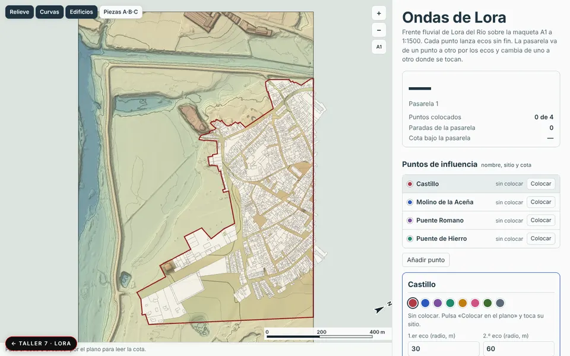
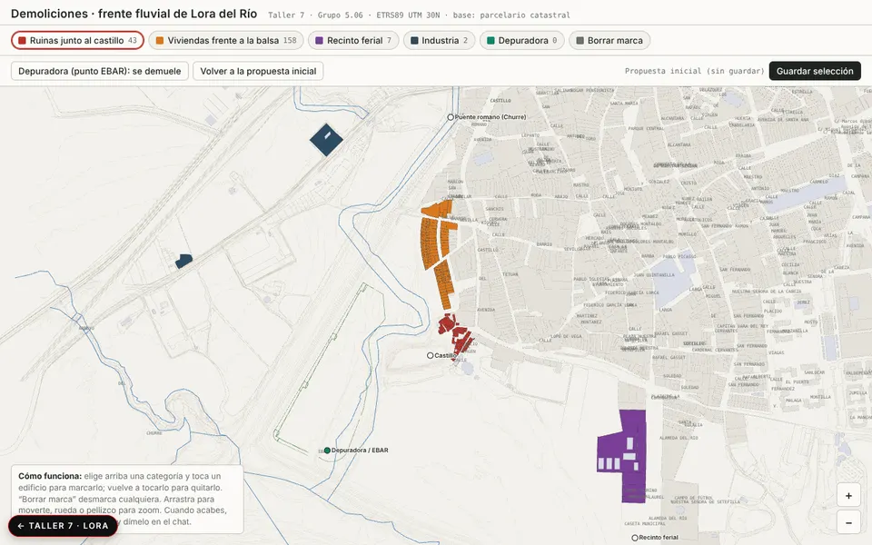
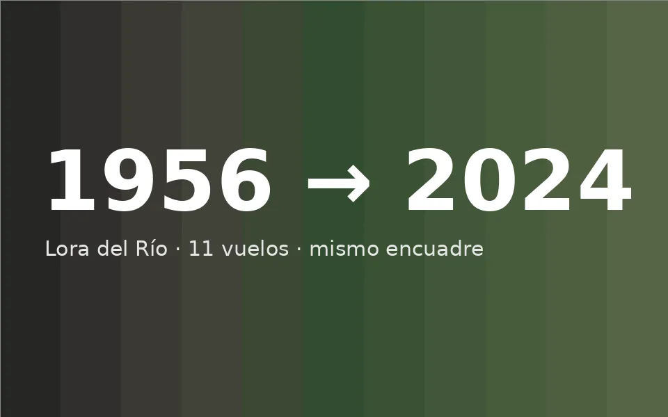

Ondas de Lora
Frente fluvial sobre la maqueta A1: cada punto de influencia lanza ecos; la pasarela los une y cambia de cota.
Abrir →
Demoliciones
Selección por categorías de los edificios a demoler o conservar sobre el parcelario catastral, con propuesta guardable.
Abrir →
Ortofotos 1956 → 2024
Once vuelos con el mismo encuadre, servidos en directo desde el IGN y la REDIAM, con comparador antes/después.
Abrir →Leer antes de proyectar
Las ortofotos oficiales se piden en directo a los servicios WMS del IGN y de la Junta, siempre con el mismo encuadre (5,5 × 3,85 km en ETRS89 UTM 30N), así que se superponen exactas y se pueden comparar con un deslizador. Sobre el parcelario de Catastro marqué los edificios candidatos a demoler por categorías, y sobre la maqueta del frente fluvial se trazan pasarelas y puntos de influencia con sus cotas.